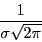

Next: Help page
Up: Param page
Previous: Param page
- Select the Sigma value, measured in world coordinates, of the Gaussian kernel. The default is 1.0.
- Select the flag Normalize for normalizing the gaussian over scale space. When this flag is ON the filter will be normalized in such a way that larger sigmas will not result in the image fading away.
When the flag is OFF the normalization will conserve contant the integral of the image intensity.

For analyzing an image across Scale Space you want to enable this flag. It is disabled by default.
- Select the Order of the Gaussian to convolve with.
- ZeroOrder is equivalent to convolving with a Gaussian. This is the default.
- FirstOrder is equivalent to convolving with the first derivative of a Gaussian.
- SecondOrder is equivalent to convolving with the second derivative of a Gaussian.
- Run the filter.
- Display the result.
- Save the result.
root
2010-06-26